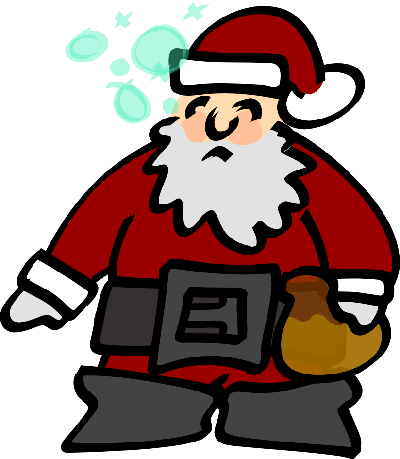

Talk
Fight
Flee
Talk
Fight
Flee

You encounter Magus Borealis.
Magus Borealis, the Red Mage of the North, leads the fascist elves, reindeer, and polar bears from the upper bergs in a ceasless war against the imperialist penguins of the nether Arctic. Magus hates children and is seldom seen without his rum.